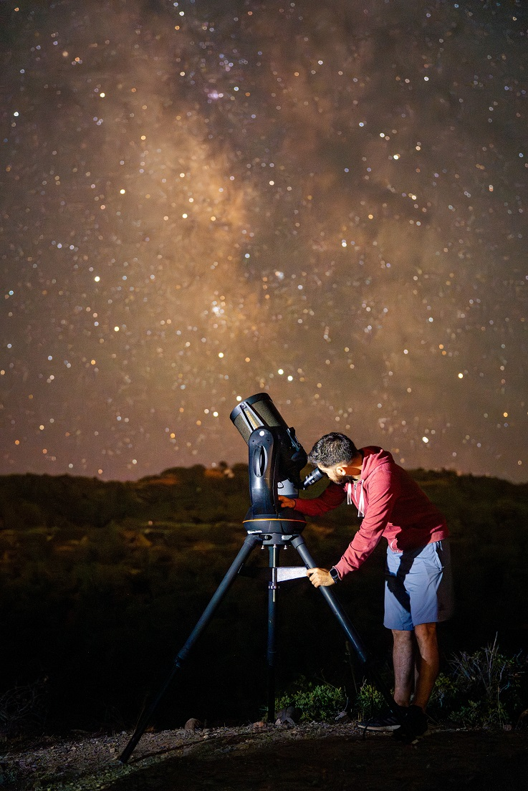
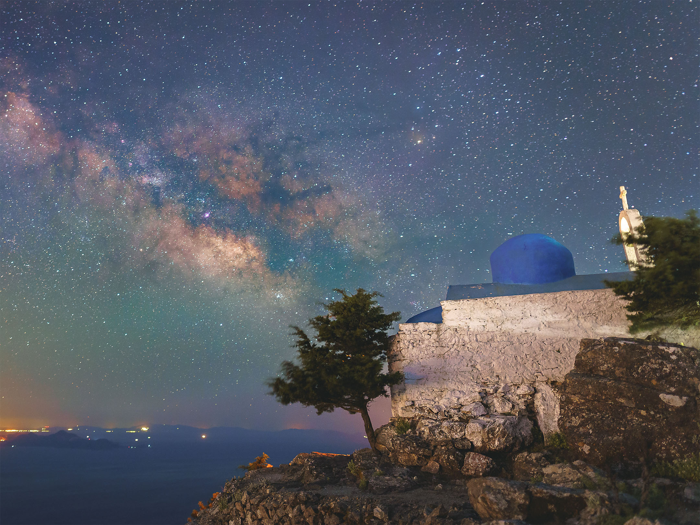
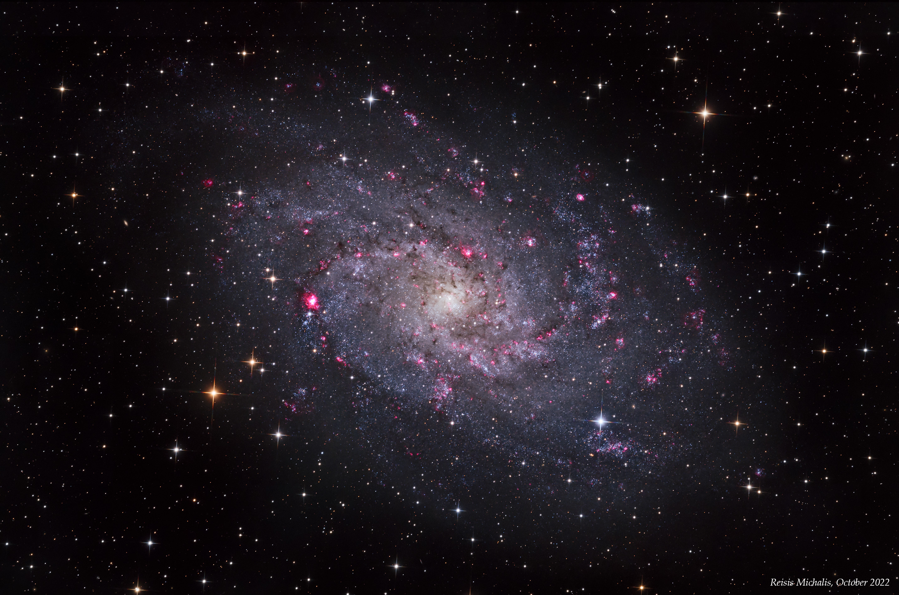
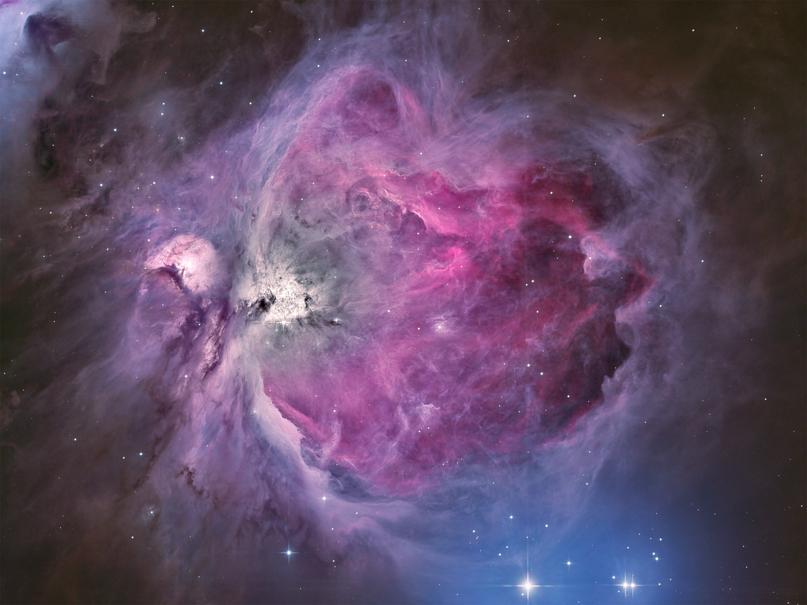
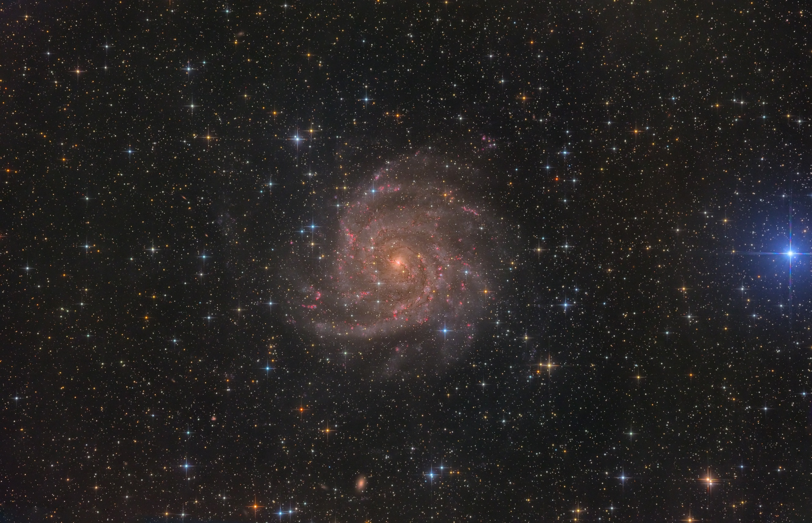

Teleskop Gözlemi
Canlı teleskop gözlemi ile Ay, gezegenler ve gökyüzü detayları.
Misafirlerinize teleskop gözlemi, gökyüzü hikâyeleri ve astrofotoğrafçılık ile unutulmaz bir akşam deneyimi sunun.
Kos’ta 5 yıldızlı otellerle 5 sezondur düzenlenen premium misafir deneyimi. Şimdi Bodrum’da seçili otel iş birlikleri için görüşmeler yapılmaktadır.
Stargazing Events, son 5 sezondur Kos Adası’nda 5 yıldızlı oteller, resortlar ve özel misafir grupları için düzenlenen premium bir gece deneyimidir.


Misafirler genellikle yıldız gözlem etkinliği talep etmez; çünkü konaklamaları sırasında böyle bir deneyimin sunulabileceğini bilmezler. Bu da deneyimi beklenmedik, özel ve akılda kalıcı hâle getirir.
Ön bilgi gerekmez. Deneyim tamamen rehberlidir ve her yaştan misafir için uygundur.
Canlı teleskop gözlemi ile Ay, gezegenler ve gökyüzü detayları.
Ay görünür olduğunda kraterler ve yüzey detayları etkileyici şekilde gözlemlenir.
Mevsim ve gökyüzü koşullarına bağlı olarak Satürn, Jüpiter ve parlak gezegenler.
Takımyıldızlar, mitoloji ve gece gökyüzüne dair sade, etkileyici anlatım.
Orijinal astrofotoğrafçılık çalışmaları ile gökyüzünün görünmeyen detayları.
Çiftler, aileler, küçük gruplar ve VIP misafirler için uygun, sakin ve özel bir etkinlik.
Düşük operasyon yükü, yüksek misafir memnuniyeti. Otel ekibi için minimum hazırlık gerektirir.
Sabit bir liste fiyatı yoktur. Fiyatlandırma; iş birliği sıklığı, etkinlik süresi, grup büyüklüğü, lokasyon ve seçilen format gibi detaylara göre netleşir.
Otel için ekipman maliyeti veya gelir paylaşımı yoktur. En iyi başlangıç noktası kısa bir görüşmedir.
Teklif GörüşmesiDeneyim için ideal alan, gökyüzünü mümkün olduğunca geniş gören açık ve güvenli bir bölgedir. Otel ekibinin özel bir hazırlık yapması gerekmez.
Engelsiz veya geniş gökyüzü açısı idealdir.
Yakın çevre ışıkları mümkün olduğunca azaltılır.
Standart bir elektrik hattı yeterlidir.
Misafirlerin konforlu şekilde bekleyebileceği alan.
Otel ekibinin etkinlik süresinde özel müdahalesi gerekmez.
Tüm teleskop ve donanım Michalis tarafından temin edilir.
Önce misafir deneyimi ve atmosfer; ardından Ay, gezegenler, Samanyolu ve derin uzay çalışmalarından seçilmiş görseller.










Kos Adası doğumluyum. Son 5 sezondur lüks oteller, resortlar ve özel misafir grupları için yıldız gözlem deneyimleri tasarlıyor ve sunuyorum.
Deneyim; astronomi, mitoloji ve atmosfer öğelerini bir araya getirerek rafine bir misafir deneyimine dönüştürülmüştür. Kos’taki 5 yıldızlı otellerle yürütülen iş birlikleri, şimdi Bodrum’daki seçili ortaklıklara da açılmaktadır.
Misafir deneyiminin yanı sıra, astrofotoğrafçılık çalışmalarımla geceye görsel derinlik ve özgünlük katıyorum.
Dil notu: Görüşmeler İngilizce dilinde yürütülmektedir. Otel ekipleriyle koordinasyon için İngilizce yeterlidir. (Meetings are conducted in English.)
Otel ekiplerinin sıkça sorduğu sorular.
Yaklaşık 60–75 dakika.
Uygun olmayan hava koşullarında etkinlik yeni bir tarihe alınabilir veya iptal edilir. Hava ve Ay evresi önceden kontrol edilir.
5–85 yaş arası misafirler için uygundur. Ön bilgi veya hazırlık gerekmez.
En iyi deneyim için 1 kişiden yaklaşık 20–22 kişiye kadar önerilir.
Gökyüzünü geniş gören açık bir alan idealdir — teras, bahçe veya havuz başı uygundur.
Otelin yalnızca uygun alan, azaltılmış çevre ışığı ve elektrik bağlantısı sağlaması yeterlidir. Tüm ekipman Michalis tarafından getirilir.
Deneyim tamamen rehberlidir; anlatım, gözlem ve hikâye akışı Michalis tarafından yönetilir.
Her katılımcıya orijinal astrofotoğrafçılık çalışmalarından hazırlanmış özel bir kartpostal hediye edilebilir.
Bodrum, Kos ve yakın destinasyonlarda seçili otel iş birlikleri için görüşmeye açığım.
mike@stargazing.events · +30 694 777 2928 · www.stargazing.events · @mixalre